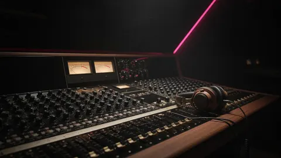
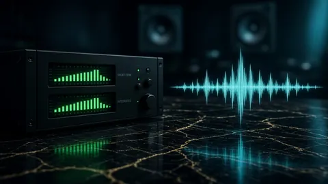
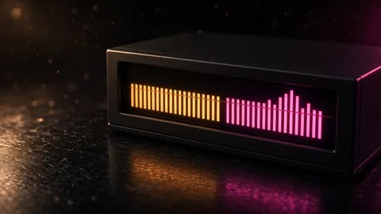
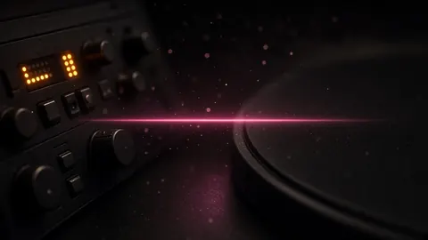
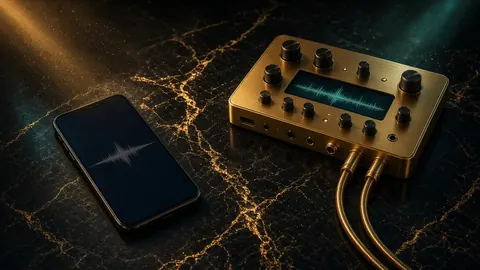
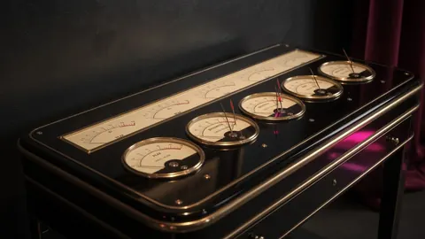
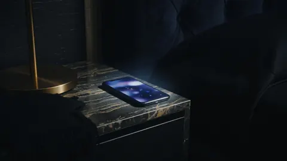

Lacquer · Topic · 10 essays
Loudness & LUFS
Loudness is a contract with the store, not a contest. These essays explain what the meter is actually reading before you reach for another limiter.
Loudness is the number a store reads before anyone hears your record. Streaming services measure integrated loudness over the whole file with the ITU-R BS.1770 method and turn each track up or down toward a playback reference: Spotify documents −14 LUFS, and Apple’s Sound Check is commonly reported near −16. A −8 LUFS master is not played louder than a −14 one. It is turned down until it matches, and whatever you crushed to get there stays crushed.
The essays here separate the meters people confuse: integrated versus short-term and momentary loudness, loudness versus crest factor, and the quiet intros and fades that drag the whole-song number down. They also cover the traps that come from comparing against platforms instead of files: streamed references that were already normalized, quiet masters whose noise floor gets lifted, album sequences that need one loudness lane, and vertical video that plays by different rules. Start with why streaming turns loud masters down, then read the meter pieces in order.

Cover · 20 August 2026 · 8 minWhy streaming platforms turn loud masters down
Streaming services normalize toward −14 LUFS (Apple closer to −16). A hotter master is turned down, not played louder. Measure integrated LUFS before you limit again.

Loudness · 12 October 2026 · 8 minShort-term LUFS is not your target
Stores use integrated LUFS over the whole file. A hook at −9 short-term can still miss −14 integrated. Read both meters, then decide.

Meters · 14 October 2026 · 7 minIntegrated LUFS hides how loud the chorus actually is
A master can read −14 LUFS integrated while its chorus runs 3–4 LU hotter. Measure integrated, short-term and momentary on one bounce first.

Meters · 5 October 2026 · 7 minThe silence at the top of your bounce steals LUFS
Digital silence is gated out of integrated LUFS, but quiet intros, long fades and ungated meters still pull the number down. Trim the edges, then measure.

Workflow · 14 October 2026 · 7 minDon’t match a streamed reference
A streamed reference was already turned down or up by the platform. Match it and you inherit an offset you never measured. Compare lossless files.
- Reference · 21 August 2026 · 7 min
Reference matching without guesswork
Reference matching means comparing meters, not vibes. CoProducer’s divergence table shows where your bounce sits versus a reference on real gates.

Dynamics · 21 August 2026 · 7 minCrest factor is not loudness
Crest factor is peak-to-RMS height. LUFS is perceived loudness over time. You can raise crest and still miss −14 LUFS — or hit −14 with a crushed crest.

Noise · 21 August 2026 · 6 minQuiet masters get turned up — and so does the noise
Streaming turn-up lifts quiet files. A −20 LUFS master may be gained up, which also lifts hiss, rumble, and room tone. Quiet is not a free pass.
- Albums · 21 August 2026 · 7 min
Album consistency is a batch problem
Album consistency means every track clears the same delivery gates and sits in a similar loudness lane — a batch measurement problem, not one “final” bounce.
- Social · 21 August 2026 · 8 min
What LUFS for Reels, TikTok and Shorts?
Reels, TikTok and Shorts don’t publish a LUFS target. Check the exported clip instead: true peak under −1 dBTP, a strong first 3 seconds, a mono check.
More topics: True peak, limiting & delivery Low end, 808s & mix dynamics 432 Hz, pitch & tempo Stem separation, sampling & privacy All essays